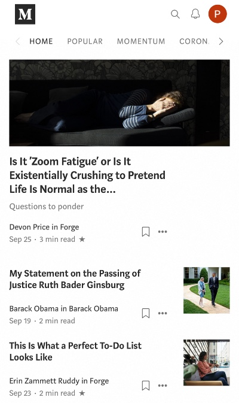

Design Principles Document
Po-Ya Wang
Visual Hierarchy
Din Tai FungDin Tai Fung is a famous Taiwanese restaurant, it's known for xiao long bao. The website clearly shows the recommendations by using photos of the food-making process, it catches the attention of users. Moreover, because of the white space around it allows the users to focus on the content.
White Space & Clean Design
Medium The website uses white space to separate the articles. Users can easily distinguish the title of different articles. The website achieves the goal of keeping it clean to communicate clear messages. It allows users to scroll through the topics that they would like to look into more.
Repetition
SephoraThe website of Sephora uses repetition on patterns to catch the attention of users. The background use different shades of the color blue to separate the categories. Because of the repetition of patterns, users are more likely to see the photos which increases the desire to shop.